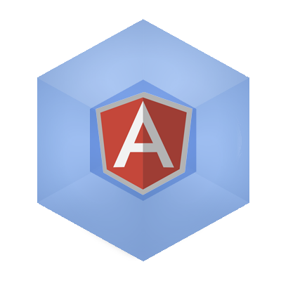

Part 3
6 Ways to use Webpack Require with Angular

For some reason, Webpack & Angular reminds me of late 90s Acne commercials.
It keeps your code: clean, clear & under control
What a terrible way to start a blog post, but I'll stick with it. No regrets.
In Part 1 & Part 2 we prepared setting up the project, all for this moment. Let's take advantage of using Webpack & Angular for creating modular code.
What is Required
In this demo we'll keep it simple and make a navbar directive, looking at the different ways of using require.
1. require('module').name
First of all, we'll need a module for handling our layout directives.
/app/core/layout.js
export default angular.module('app.layout', [])
We can simply require the layout by its (path).name, allowing us to change module names at any time.
Just make the loaded module a dependency.
/app/index.js
module.exports = angular.module('app', [
/* 3rd party */
'lumx',
/* modules */
require('./core/layout').name
]);
2. Modular Directive Names
This makes it easy to change directive names in separate files with ease.
Let's start by setting up the navbar template.
/app/core/nav/nav.html
<header class="header bgc-light-blue-600" ng-cloak>
<!-- Get the app info and put it in the navbar on the left -->
<h1 class="main-logo">
<a href="/" class="main-logo__link" lx-ripple="white">
<span class="main-nav--title">{{::nav.app.title}} </span>
<span class="main-nav--version">v{{::nav.app.version}}</span>
</a>
</h1>
<!-- Loop over the links and add them to the navbar on the right -->
<nav class="main-nav main-nav--lap-and-up">
<ul>
<li ng-repeat="n in nav.app.links">
<a href="{{::n.link}}" class="main-nav__link" lx-ripple="white">
{{::n.text}}</a>
</li>
</ul>
</nav>
</header>
Add some style:
/app/core/nav/nav.scss
.header {
position: fixed;
top: 0;
right: 0;
left: 0;
z-index: 999;
height: 60px;
padding: 12px;
color: white;
background-color: #4fc1e9;
box-shadow: 0 1px 2px rgba(0, 0, 0, 0.3);
}
For the full nav.scss file, get it on Github. This is a short/ugly version.
Next add the directive & controller. Don't be confused, in this case my controller uses ES6 classes.
/app/core/nav/nav.js
class NavCtrl {
constructor() {
this.app = {
title: 'Module Loaders',
version: '0.3.0',
links: [{
text: 'Webpack',
link: 'http://webpack.github.io'
}, {
text: 'Require.js',
link: 'http://requirejs.org/'
}, {
text: 'Jspm',
link: 'http://jspm.io/'
}]
};
}
}
export default () => {
require('./nav.scss'); // load styles for the component
return {
controller: NavCtrl,
controllerAs: 'nav',
templateUrl: './core/nav/nav.html'
};
};
Notice the directive was never named. You really only need to name it once, on its angular.module.
/app/core/layout.js
export default angular.module('app.layout', [])
.directive('lumxNavbar', require('./nav/nav'));
This way, name changes remain very flexible even between files.
Add the directive to index.html and you should be able to see our working navbar.
/app/index.html
<body>
<lumx-navbar></lumx-navbar>
<!-- ... -->
Nice!
3. require(templates)
This lumxNavbar templateUrl doesn't allow us to move things around very much. And the path is already getting long: app/core/nav/nav.html.
We can simplify this with the raw-loader. Install it as a dev dependency.
npm install -D raw-loader
Add another loader to our app/webpack.config.js file.
{
test: /\.html/,
loader: 'raw'
}
Note: Restart the webpack-dev-server for any config changes to take effect.
And now we can require html files using relative paths, this makes it much easier to move folders around.
/app/core/nav/nav.js
/* old templateUrl: './core/nav/nav.html' */
template: require('./nav.html')
4. require(json)
By now you're probably getting the hang of loaders. Just to be sure, let's load some json, get the json-loader.
npm install -D json-loader
Add it to the webpack.config.js.
//webpack.config.js
{
test: /\.json/,
loader: 'json'
}
We can put all of our main data into an index.json file, so when we make frequent navbar changes in the future, we won't have to dive into the nested /app/core/nav/nav.
/app/index.json
{
"title": "Module Loaders",
"version": "0.3.0",
"links": [{
"text": "Webpack",
"link": "http://webpack.github.io"
}, {
"text": "Require.js",
"link": "http://requirejs.org/"
}, {
"text": "Jspm",
"link": "http://jspm.io/"
}]
}
Let's require this file in nav.js
/app/core/nav/nav.js
class NavCtrl {
constructor() {
this.app = require('../../index.json');
}
}
But what if we move the nav folder around? Wouldn't an absolute path to app/index.json be more useful?
Luckily, with webpack we can use both.
5. require(absolute & || relative paths)
A relative path points to files relative to the current directory.
parent.js
├── file.js
│ ├── folder
│ │ └──child.js
- Parent
../parent.js - At the same level
./file.js - Nested
./folder/child.js
But if you want to move the folder or child.js around, the path will break.
Sometimes a relative path is best, but other times it's better to use an absolute path.
To use absolute paths with Webpack, we must first tell webpack.config our absolute root.
/app/webpack.config.js
module.exports = {
/* ... */
resolve: {
root: __dirname + '/app'
}
};
Now we can point to our index.json file in a much cleaner way.
Note: Again, you'll have to restart the webpack-dev-server for any config changes to take effect.
class NavCtrl {
constructor() {
/* old this.app = require('../../index.json'); */
this.app = require('index.json');
}
}
6. if (condition) { require('module') }
Say we want to run some angular optimizations, but only during production. Normally this would require a separate code base, but with Webpack we can nest modules within if statements.
For example, with ES6 modules, we can only import files at the top of the file. They cannot be wrapped in any blocks. Webpack's require is much more flexible.
The goal: if (mode === production) { load production optimizations }.
/app/core/config/production.js
export default (appModule) => {
appModule.config(($compileProvider, $httpProvider) => {
/* less watchers from console debugging: https://docs.angularjs.org/guide/production */
$compileProvider.debugInfoEnabled(false);
/* process multiple responses @ same time: https://docs.angularjs.org/api/ng/provider/$httpProvider */
$httpProvider.useApplyAsync(true);
});
};
Here we're loading the root appModule and providing it with some config optimizations.
Let's put in an if(){} statement to load production.js only when we are using production mode.
/app/core/bootstrap.js
require('./vendor.js')();
var appModule = require('../index');
if (MODE.production) { // jshint ignore:line
require('./config/production')(appModule);
}
angular.element(document).ready(() => {
angular.bootstrap(document, [appModule.name], {
//strictDi: true
});
});
Notice a few optimizations using MODE.production. But where does MODE come from? We can let webpack know.
/app/webpack.config.js
module.exports = {
/* ... */
plugins: [
new webpack.DefinePlugin({
MODE: {
production: process.env.NODE_ENV === 'production'
}
})
]
}
Production mode can now be called when declare the NODE_ENV=production.
NODE_ENV=production node node_modules/.bin/webpack-dev-server --content-base app
This method can also be used for loading angular-mocks during MODE.test, etc.
Conclusion
Webpack's require gives you a lot more flexibility for building modular apps.
But we're really only scratching the surface of what Webpack can do. Check out the docs for more.
And again, check out the codebase or post any issues on Github. If you have any suggestions or other uses, post a comment below.